Лабораторна робота №2
Тема
Каскадні таблиці стилів. Селектори тегу, класу, ідентифікатора. Стильове оформлення текстових елементів в HTML-документах.
Мета
Придбати практичні навички роботи з селекторами, ідентифікаторами, списками, різноманітними властивостями кольору і фону, зовнішніми та внутрішніми відступами, плаваючими елементами, оформленням текстових елементів.
Місце розташування
| WEB-застосунок MODHUB | Репозиторій | github.com/Oleg-StackOverflow/IA-44_appWEB-ZakharovOleh-FIOT-2026 |
|---|---|---|
| Жива сторінка | Oleg-StackOverflow.github.io/IA-44_appWEB-ZakharovOleh-FIOT-2026 | |
| Звітний HTML-документ | Репозиторій | github.com/Oleg-StackOverflow/IA-44_appRECORD-ZakharovOleh-FIOT-2026 |
| Жива сторінка | Oleg-StackOverflow.github.io/IA-44_appRECORD-ZakharovOleh-FIOT-2026 |
Способи підключення стилів
Зовнішня таблиця стилів (index.html, about.html)
<link rel="preconnect" href="https://fonts.googleapis.com">
<link href="https://fonts.googleapis.com/css2?family=Inter:wght@400;500;600&display=swap" rel="stylesheet">
<link rel="stylesheet" href="css/style.css">Внутрішня таблиця стилів (about.html)
<style>
.about h2 {
padding-bottom: 8px;
border-bottom: 1px solid var(--border);
}
</style>Вбудований стиль (about.html)
<h1 style="color: var(--accent);">Про проєкт MODHUB</h1>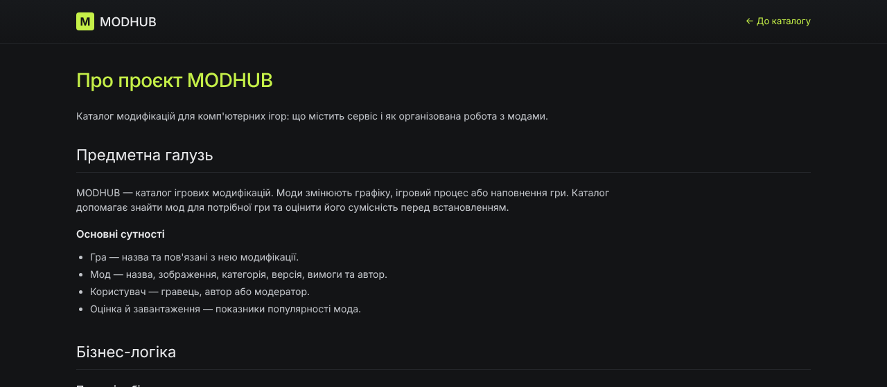
Селектори
У WEB-застосунку MODHUB застосовано такі селектори:
- Селектори тегу —
body,a,h1,h2,h3 - Селектори класу —
.logo,.btn-accent,.btn-outline - Селектори ідентифікаторів —
#popular,#feedback,#message - Інші селектори — універсальний, дочірній, сусідній, селектор атрибута
Селектори тегу
HTML-код
<body>
...
<h1>Каталог модів</h1>
...
<h2>Популярні моди</h2>
...
<a href="about.html" class="link-accent">Про проєкт і бізнес-логіку</a>
</body>CSS-код
body {
font-family: 'Inter', Arial, sans-serif;
font-size: 14px;
line-height: 1.5;
background-color: var(--bg);
color: var(--text);
display: flex;
flex-direction: column;
min-height: 100vh;
}
a {
color: inherit;
text-decoration: none;
transition: color 0.2s;
}
h1 {
font-size: 28px;
font-weight: 500;
letter-spacing: -0.02em;
margin: 32px 0 20px;
}
h2 {
font-size: 22px;
font-weight: 400;
margin-bottom: 18px;
}
h3 {
font-size: 15px;
font-weight: 600;
}Зображення в браузері
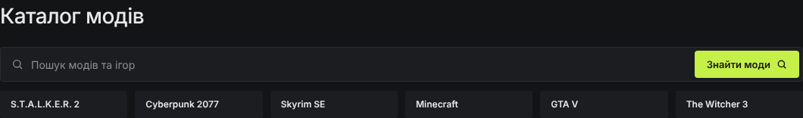
Селектори класу
HTML-код
<a href="index.html" class="logo">
<span class="logo__icon">M</span>
<span class="logo__text">MODHUB</span>
</a>
<a href="#" class="btn-outline">Додати мод <span class="arrow-down">▾</span></a>
<button type="submit" class="btn-accent">
Знайти моди
<svg width="14" height="14" viewBox="0 0 24 24" fill="none" stroke="currentColor" stroke-width="2.5">
<circle cx="11" cy="11" r="7"></circle>
<line x1="16.5" y1="16.5" x2="21" y2="21"></line>
</svg>
</button>CSS-код
.logo {
display: flex;
align-items: center;
gap: 8px;
}
.logo__icon {
width: 26px;
height: 26px;
background-color: var(--accent);
color: var(--bg);
border-radius: var(--radius);
display: flex;
align-items: center;
justify-content: center;
font-weight: 700;
font-size: 16px;
}
.btn-accent {
display: inline-flex;
align-items: center;
gap: 8px;
background-color: var(--accent);
color: var(--bg);
border: none;
border-radius: var(--radius);
padding: 10px 16px;
font-family: inherit;
font-size: 13px;
font-weight: 600;
cursor: pointer;
transition: background-color 0.2s, box-shadow 0.2s;
}
.btn-accent:hover {
background-color: var(--accent-hover);
box-shadow: 0 0 0 4px rgba(197, 240, 72, 0.15);
}
.btn-outline {
display: inline-flex;
align-items: center;
gap: 10px;
border: 1px solid var(--accent);
border-radius: var(--radius);
padding: 6px 12px;
font-size: 13px;
transition: background-color 0.2s;
}
.btn-outline:hover {
background-color: rgba(197, 240, 72, 0.1);
}Зображення в браузері
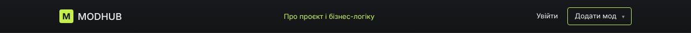
Селектори ідентифікаторів
HTML-код
<section id="popular">
...
</section>
<section id="feedback">
<h2>Зворотний зв'язок</h2>
<form action="#" method="post" class="feedback__form">
<div class="form-row">
<div class="form-group">
<label for="name">Ім'я</label>
<input type="text" id="name" name="name" placeholder="Ваше ім'я" required>
</div>
<div class="form-group">
<label for="email">Електронна пошта</label>
<input type="email" id="email" name="email" placeholder="name@example.com" required>
</div>
</div>
<div class="form-group">
<label for="message">Повідомлення</label>
<textarea id="message" name="message" rows="4" placeholder="Напишіть ваше запитання..."></textarea>
</div>
<button type="submit" class="btn-accent">Надіслати повідомлення</button>
</form>
</section>CSS-код
#popular {
margin-top: 44px;
}
#feedback h2 {
margin-bottom: 18px;
}
#message {
min-height: 100px;
resize: vertical;
}Зображення в браузері
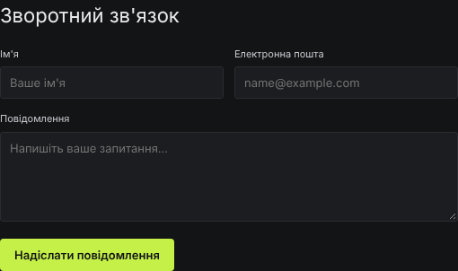
Інші селектори
Універсальний селектор
* {
margin: 0;
padding: 0;
box-sizing: border-box;
}Дочірній селектор
<ul class="games">
<li><a href="#">S.T.A.L.K.E.R. 2</a></li>
<li><a href="#">Cyberpunk 2077</a></li>
<li><a href="#">Skyrim SE</a></li>
<li><a href="#">Minecraft</a></li>
<li><a href="#">GTA V</a></li>
<li><a href="#">The Witcher 3</a></li>
</ul>/* дочірній селектор */
.games > li > a {
display: block;
background-color: var(--surface);
padding: 9px 12px;
font-size: 12px;
font-weight: 600;
border-radius: 2px;
border-left: 2px solid transparent;
transition: background-color 0.2s, border-color 0.2s;
}
.games > li > a:hover {
background-color: var(--surface-hover);
border-left-color: var(--accent);
}
/* дочірній селектор */
.header__actions > a:first-child:hover {
color: var(--accent);
}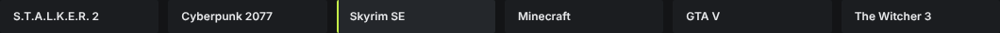
Сусідній селектор
<h3>Встановлення мода</h3>
<ol>
...
</ol>
<h3>Перед запуском</h3>
<ul>
...
</ul>/* сусідній селектор: список одразу після підзаголовка */
.howto h3 + ol,
.howto h3 + ul {
margin-top: 8px;
font-size: 13px;
color: var(--text-soft);
}Селектор атрибута
<input type="text" id="name" name="name" placeholder="Ваше ім'я" required>
<input type="email" id="email" name="email" placeholder="name@example.com" required>
<a href="https://github.com/" target="_blank">GitHub</a>/* селектори атрибутів */
.form-group input[type="text"],
.form-group input[type="email"],
.form-group textarea {
width: 100%;
background-color: var(--surface);
border: 1px solid var(--border-input);
border-radius: 3px;
color: var(--text);
font-family: inherit;
font-size: 13px;
padding: 9px 10px;
transition: border-color 0.2s;
}
.form-group input[type="text"]:focus,
.form-group input[type="email"]:focus,
.form-group textarea:focus {
outline: none;
border-color: var(--accent);
}
/* селектор атрибута: зовнішні посилання отримують стрілку */
a[href^="http"]::after {
content: " \2197";
}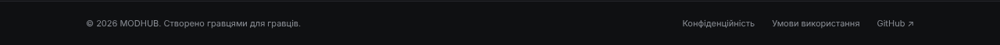
CSS: шрифти, текст, таблиці, фон, контур, списки, CSS просунутий
Шрифти
<link href="https://fonts.googleapis.com/css2?family=Inter:wght@400;500;600&display=swap" rel="stylesheet">
body {
font-family: 'Inter', Arial, sans-serif;
font-size: 14px;
line-height: 1.5;
background-color: var(--bg);
color: var(--text);
display: flex;
flex-direction: column;
min-height: 100vh;
}
.mod__meta {
font-size: 11px;
color: var(--text-muted);
margin-bottom: 4px;
}
.mod__name {
font-size: 16px;
font-weight: 400;
}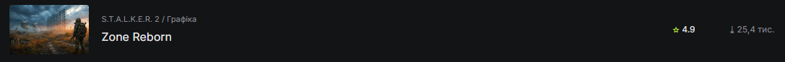
Колір тексту
.link-accent {
color: var(--accent);
font-size: 13px;
}
.link-accent:hover {
text-decoration: underline;
text-underline-offset: 3px;
}
.muted {
color: var(--text-muted);
}
.arrow-down {
font-size: 10px;
color: var(--text-muted);
}
Фон
.header {
border-bottom: 1px solid var(--border);
background: linear-gradient(180deg, #17191c 0%, var(--bg) 100%);
}
.search {
display: flex;
align-items: center;
background-color: var(--surface);
border: 1px solid var(--border-input);
border-radius: var(--radius);
padding: 4px 4px 4px 14px;
transition: border-color 0.2s;
}
/* дочірній селектор */
.games > li > a {
display: block;
background-color: var(--surface);
padding: 9px 12px;
font-size: 12px;
font-weight: 600;
border-radius: 2px;
border-left: 2px solid transparent;
transition: background-color 0.2s, border-color 0.2s;
}
.games > li > a:hover {
background-color: var(--surface-hover);
border-left-color: var(--accent);
}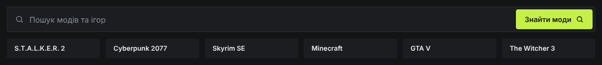
Контур
/* контур для навігації з клавіатури */
a:focus-visible,
button:focus-visible {
outline: 2px solid var(--accent);
outline-offset: 3px;
}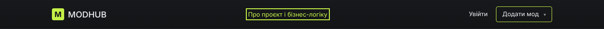
.btn-outline {
display: inline-flex;
align-items: center;
gap: 10px;
border: 1px solid var(--accent);
border-radius: var(--radius);
padding: 6px 12px;
font-size: 13px;
transition: background-color 0.2s;
}
.form-group input[type="text"]:focus,
.form-group input[type="email"]:focus,
.form-group textarea:focus {
outline: none;
border-color: var(--accent);
}
.mods-table td {
padding: 12px 0;
border-bottom: 1px solid var(--border);
font-size: 12px;
}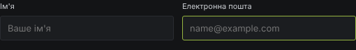
Таблиці
.mods-table {
width: 100%;
border-collapse: collapse;
}
.mods-table th {
font-size: 11px;
font-weight: 400;
color: var(--text-muted);
text-align: left;
padding-bottom: 10px;
border-bottom: 1px solid var(--border);
}
.mods-table td {
padding: 12px 0;
border-bottom: 1px solid var(--border);
font-size: 12px;
}
.mods-table tbody tr {
transition: background-color 0.2s;
}
.mods-table tbody tr:hover {
background-color: var(--surface);
}
.mods-table tbody tr:hover .mod img {
transform: scale(1.05);
}
Багаторівневі списки
<h3>Перед запуском</h3>
<ul>
<li>Зробіть резервну копію збережень.</li>
<li>Перевірте сумісність з іншими модами:
<ul>
<li>порядок завантаження модів;</li>
<li>чи не змінюють моди одні й ті самі файли.</li>
</ul>
</li>
...
</ul>/* нумерований список із власними лічильниками */
.howto ol {
list-style: none;
counter-reset: step;
}
.howto ol > li {
counter-increment: step;
position: relative;
padding-left: 28px;
margin-bottom: 6px;
}
.howto ol > li::before {
content: counter(step);
position: absolute;
left: 0;
top: 1px;
width: 18px;
height: 18px;
border-radius: 50%;
background-color: var(--accent);
color: var(--bg);
font-size: 11px;
font-weight: 700;
text-align: center;
line-height: 18px;
}
/* багаторівневий маркований список */
.howto ul {
padding-left: 18px;
list-style-type: square;
}
.howto ul li::marker {
color: var(--accent);
}
.howto ul ul {
margin-top: 4px;
list-style-type: circle;
color: var(--text-muted);
}
.howto ul ul li::marker {
color: var(--text-muted);
}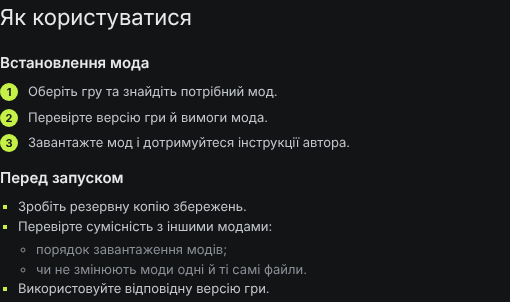
CSS просунутий
Змінні CSS:
:root {
--bg: #131416;
--bg-dark: #0f1012;
--surface: #1b1d20;
--surface-hover: #24272b;
--border: #25272b;
--border-input: #2a2c31;
--text: #e8e9eb;
--text-soft: #c4c7cc;
--text-muted: #8b8f96;
--accent: #c5f048;
--accent-hover: #d4f76e;
--radius: 4px;
}
.star {
color: var(--accent);
}
.logo__icon {
width: 26px;
height: 26px;
background-color: var(--accent);
color: var(--bg);
border-radius: var(--radius);
display: flex;
align-items: center;
justify-content: center;
font-weight: 700;
font-size: 16px;
}Переходи, трансформації, тіні:
.btn-accent:hover {
background-color: var(--accent-hover);
box-shadow: 0 0 0 4px rgba(197, 240, 72, 0.15);
}
.mod img {
width: 110px;
height: 70px;
object-fit: cover;
border-radius: 3px;
transition: transform 0.3s;
}
.mods-table tbody tr:hover .mod img {
transform: scale(1.05);
}
.search:focus-within {
border-color: var(--accent);
}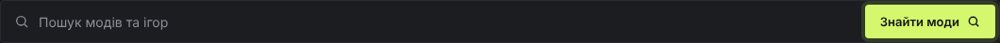
Flexbox і Grid:
.header__inner {
display: flex;
align-items: center;
justify-content: space-between;
height: 62px;
}
.games {
list-style: none;
display: grid;
grid-template-columns: repeat(6, 1fr);
gap: 10px;
margin-top: 12px;
}
.bottom {
display: grid;
grid-template-columns: 1fr 1fr;
gap: 40px;
margin: 44px 0 50px;
}Медіазапити:
@media (max-width: 800px) {
.container {
padding: 0 20px;
}
.header__nav {
display: none;
}
.games {
grid-template-columns: repeat(3, 1fr);
}
.bottom {
grid-template-columns: 1fr;
}
}
@media (max-width: 500px) {
.games {
grid-template-columns: repeat(2, 1fr);
}
.form-row {
grid-template-columns: 1fr;
}
.mod img {
width: 80px;
height: 52px;
}
.mods-table .col-num {
width: 70px;
}
.footer__inner {
flex-direction: column;
gap: 10px;
}
}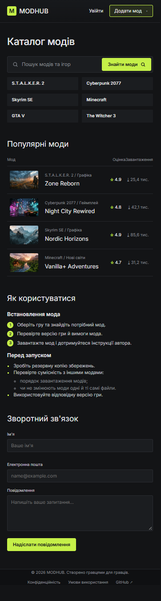
Висновки до ЛР №2
У ході лабораторної роботи було розглянуто способи підключення CSS до HTML-документа: зовнішню таблицю стилів, внутрішню таблицю в тезі <style> та інлайн-стилі. Усі три способи застосовано у WEB-застосунку MODHUB.
На практиці використано селектори тегів, класів та ідентифікаторів, а також універсальний, дочірній, сусідній селектори та селектори атрибутів. Розібрано різницю між каскадуванням і спадкуванням та роль специфічності селекторів.
Виконано стильове оформлення текстових елементів: підключено шрифт, налаштовано кольори тексту і фону, контур фокусу, оформлення таблиці, багаторівневі списки з власними лічильниками. З розділу «CSS просунутий» застосовано змінні, переходи, трансформації, тіні, Flexbox, Grid і медіазапити.
Звітний HTML-документ доповнено розділом лабораторної роботи №2.